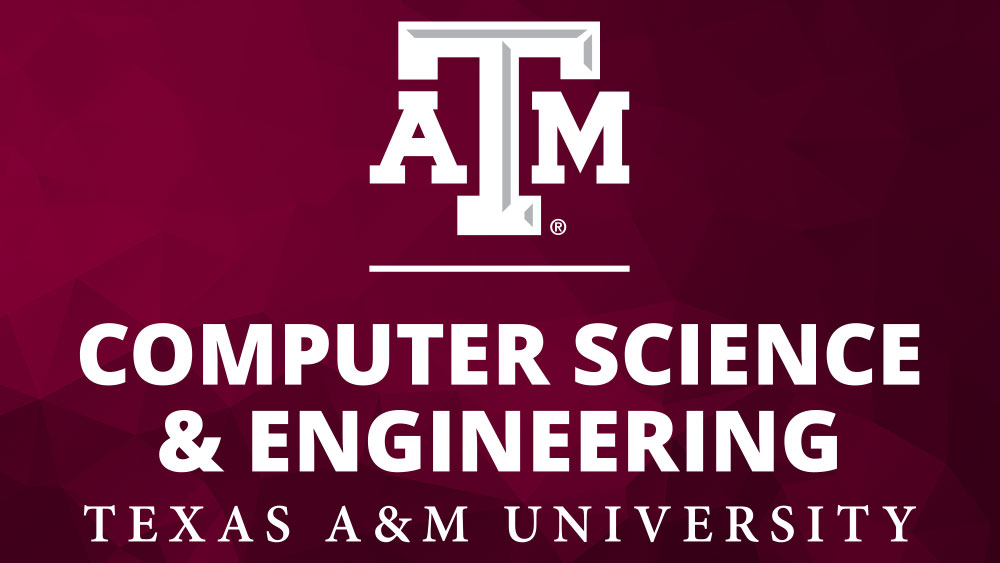
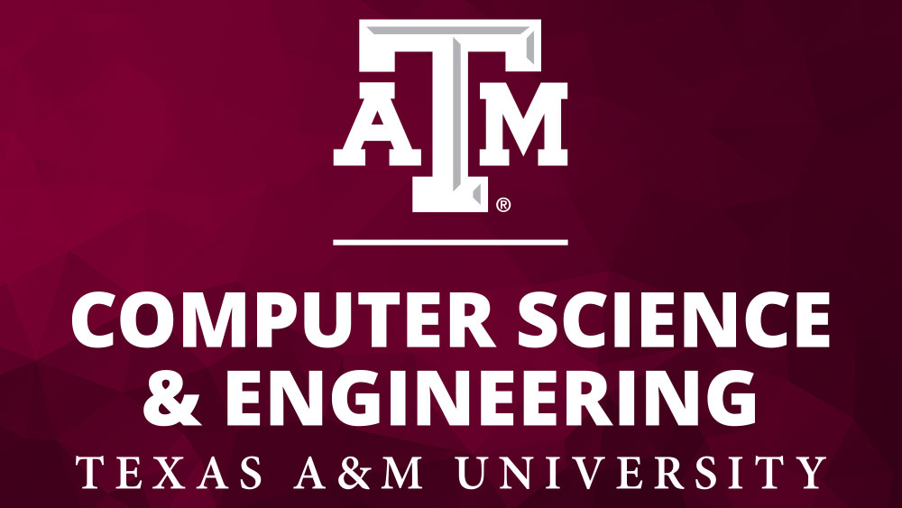

Howdy! Welcome to my Bio
My name is Nicolas Cruz and I am from Frisco, Texas. I am a Computer Engineering major with a Math minor in my senior year at Texas A&M University. After graduation I will commission as an officer into the United States Air Force. I will be doing Developmental Engineering at Wright-Patterson Air Force Base in Ohio.
Here are the organizations I have been a part of at Texas A&M:
- Corps of Cadets
- Air Force ROTC Detatchment 805
- Sophomores Leading and Motivating (SLAM)

 
